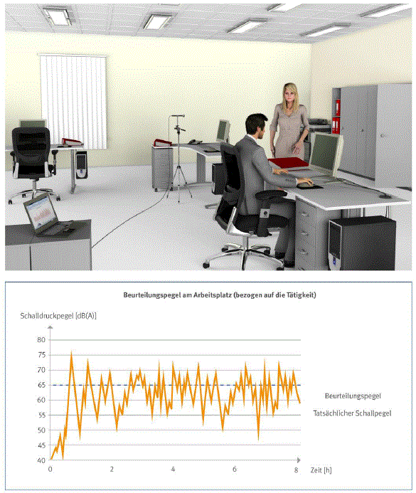

8.4.3 Lärm
| Anhang der Arbeitsstättenverordnung Nr. 3.7 |
| In Arbeitsstätten ist der Schalldruckpegel so niedrig zu halten, wie es nach der Art des Betriebes möglich ist. Der Schalldruckpegel am Arbeitsplatz in Arbeitsräumen ist in Abhängigkeit von der Nutzung und den zu verrichtenden Tätigkeiten so weit zu reduzieren, dass keine Beeinträchtigungen der Gesundheit der Beschäftigten entstehen. |
|
Der Schalldruckpegel an Büroarbeitsplätzen ist so niedrig zu halten, wie es nach der Art des Betriebes möglich ist. Er ist so weit zu reduzieren, dass keine Beeinträchtigungen der Gesundheit der Beschäftigten entstehen.
Der Beurteilungspegel soll auch unter Berücksichtigung der von außen einwirkenden Geräusche möglichst niedrig sein. In Abhängigkeit von der Tätigkeit sollte der Beurteilungspegel höchstens 55 dB(A) beziehungsweise 70 dB(A) betragen.
Der Beurteilungspegel darf bei Tätigkeiten die eine hohe Konzentration oder hohe Sprachverständlichkeit erfordern, einen Wert von 55 dB(A) nicht überschreiten. Diese Tätigkeiten sind zum Beispiel durch folgende Anforderungen gekennzeichnet:
- kreative Entfaltung von Gedankenabläufen
- Schöpferisches Denken
- exaktes sprachliches Formulieren
- das Verstehen von komplexen Texten mit komplizierten Satzkonstruktionen
- Entscheidungsfindung
- Problemlösungen
- Einwandfreie Sprachverständlichkeit
Beispiele aus der Praxis hierzu sind:
- wissenschaftliches und kreatives Arbeiten
- Entscheidungen unter Zeitdruck
- Entwicklung von Software
- Weitreichende Entscheidungen
- Entwerfen, Übersetzen, Diktieren, Aufnehmen und Korrigieren von schwierigen Texten
Bei Tätigkeiten, die eine mittlere bzw. nicht andauernd hohe Konzentration oder gutes Verstehen gesprochener Sprache bedingen, darf ein Beurteilungspegel von 70 dB(A) nicht überschritten werden. Merkmale dieser Tätigkeiten sind zum Beispiel:
- wiederkehrende ähnliche und leicht zu bearbeitende Aufgaben
- Treffen von Entscheidungen geringerer Tragweite (in der Regel ohne Zeitdruck)
- eine für Kommunikationszwecke erforderliche Sprachverständlichkeit
Beispiele aus der Praxis hierzu sind:
- Disponieren
- einfache Sachbearbeitung
- Tätigkeiten mit Publikumsverkehr
- Daten- und Texterfassung
- Einfache Prüf- und Kontrolltätigkeiten

Abb. 46 Lärmmessung im Büro und Messergebnis (Beurteilungspegel)
Geräte mit geringer Geräuschemission und somit einem möglichst kleinen Schallleistungspegel sind bei der Anschaffung zu bevorzugen.
Auch Geräusche weit unterhalb dieser Grenzwerte können unangenehm und lästig wirken und dadurch besonders Konzentration, Entscheidungszeiten und Sprachverständigung beeinträchtigen.
Konzentration und Sprachverständigung können insbesondere beeinträchtigt werden durch:
- Informationsgehalt von Geräuschen
- Höhe des Schalldruckpegels
- Zusammensetzung des Frequenzspektrums
- Zeitliche Strukturierung des Lärms
Geeignete Maßnahmen zur Lärmminderung am Arbeitsplatz sind zum Beispiel:
- Einsatz lärmarmer Arbeitsmittel
- Räumliche Trennung von Arbeitsplätzen und Lärmquellen
- Schallabsorbierende Ausführung von Fußboden, Decke, Wänden, Möbelteilen und Stellwänden sowie Einsatz von weiteren schallabsorbierenden Einrichtungsgegenständen – zum Beispiel schallabsorbierende Bilder, Deckensegel
Weitere Literatur
- Arbeitsstättenverordnung – ArbStättV
- ASR A3.7 "Lärm"
- VBG Fachwissen "Gesundheit im Büro – Fragen und Antworten"
- DGUV Information 215-443 "Akustik im Büro"
- DIN EN ISO 7779 "Akustik – Geräuschemissionsmessung an Geräten der Informations- und Telekommunikationstechnik" (2011-01)
- DIN EN ISO 11690-1 "Akustik – Richtlinien für die Gestaltung lärmarmer maschinenbestückter Arbeitsstätten – Teil 1: Allgemeine Grundlagen" (1997-02)
- VDI 2058 Blatt 3 "Beurteilung von Lärm am Arbeitsplatz unter Berücksichtigung unterschiedlicher Tätigkeiten" (2014-08)
- DIN EN ISO 3382-3 "Akustik-Messung von Parametern der Raumakustik – Teil 3: Großraumbüros" (2012-05)
- DIN 18041 "Hörsamkeit in Räumen – Anforderungen, Empfehlungen und Hinweise für die Planung" (2016-03)
|